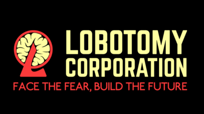

1. The Binding of Isaac
The Binding of Isaac is an indie game which is made by Edmund McMillen.
This game is about the child name Isaac, who is in trouble by the domestic abuse from his mother.
Just at the moment that the Isaac got in a great trouble, which his mom tried to kill him for the offering to the god, he found the trapdoor which is located to the basement,
and the long travel for the Isaac had started.
This game had been favorably received for the expression of the child who is experiencing the domestic abuse, and the twist of the Christianity.
For now, this game had been the great example of the successful indie game.
2. UNDERTALE

UNDERTALE is an indie game which is made by Toby Fox.
This game is about the kid who had fallen into the pit of the Mt. Ebott. You will meet monsters living inside.
You can kill them just like the RPG games, but you are able to give mercy to them and be their friends.
This game is famous for its great story, and the fresh idea in metafiction in 'save' system.
The director of the game, Toby Fox, is now working in sequel, the DELTARUNE.
3. Lobotomy Corporation

How about in Korea? Does Korea have any successful indie game?
Actually, there is. Lobotomy Corporation is an indie game which is made by the team Project Moon.
This game is about the company which manages the monster called 'Abnormality'.
You are the manager of this company, and you must manage these monsters with your employees and gather energy.
With the twist of the Kabbalah and the twist in horror game, which you don't escape or fight against it, but manage it,
This game can be a great example of the successful indie game in Korea.